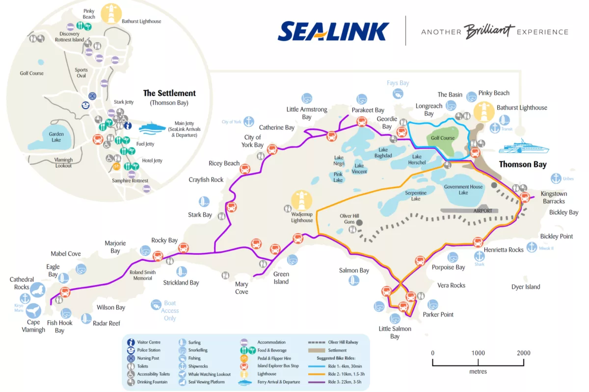

大洋路之旅!

The Journey Begins
感謝軒光的邀請，我們踏上了兩天一夜的大洋路之旅。
行程


Highlights
Samphire真的是一間超讚的飯店。島上有其他選項，也有glamping的選項，不過我們相當喜歡Samphire的體驗，價格甚至不貴!第一天的中餐跟晚餐都在Isola吃的，非常厲害的餐廳，龍蝦油烤大蝦以及神奇的豬五花，大推!
Where We Stayed
Day 1 - Day 4: Quay Perth Hotel
小型商旅，空間小，位置佳飯店連結
Day 4 - Day 5: Samphire Rottnest
在Rottness Island上，我們住在Samphire。
Day 5 - Day 6: Hyatt Regency Hotel
Travel Tips
Best time to visit: 8月囉，天氣涼了，quokka們變得很有活力
Must-bring items: 小零食，很多旅程都不太有地方買吃的
Transportation: 租車
Budget considerations: [Cost expectations and tips]

Final Thoughts
公路旅行的快樂總是用體力換來的。推薦大家有時間的話花兩天來一趟，一天真的會很趕。12使徒的夕陽很美，謝謝這次規劃行程的軒光。